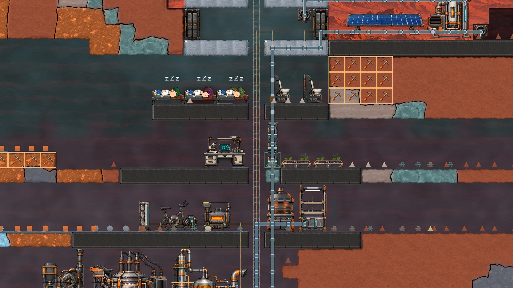

From survival to a working colony
A look inside a real Sol 28 colony, the latest production facilities, and how food, oxygen, power and research are coming together.
Read the journal →ARES PROGRAM / DEVELOPMENT JOURNAL
Notes from development: new systems, everyday colony life and the decisions shaping Ares Program.

A look inside a real Sol 28 colony, the latest production facilities, and how food, oxygen, power and research are coming together.
Read the journal →